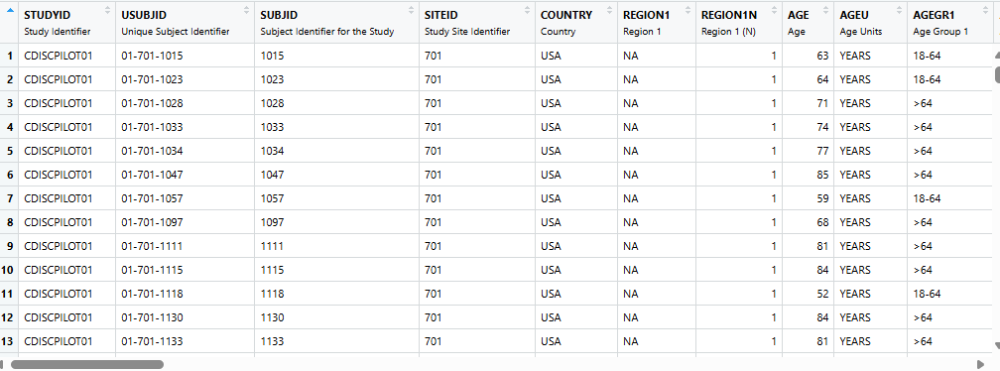
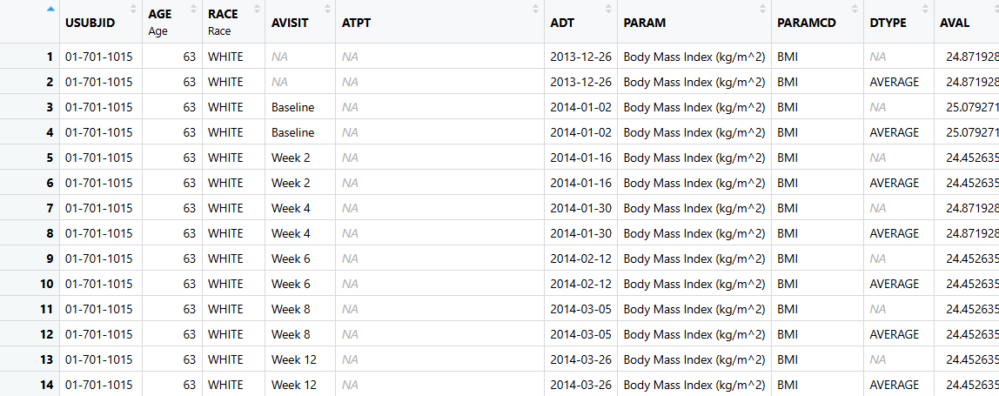
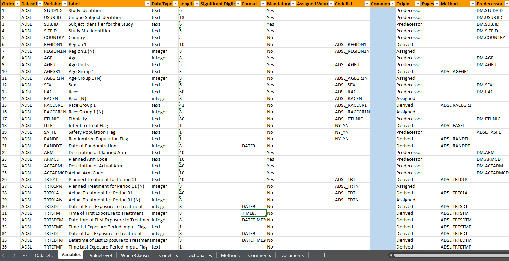

flowchart LR A[Raw] --> B[SDTM] B[SDTM] --> C[ADaM] C[ADaM] --> D[ARD] D[ARD] --> E[TFL] %% Apply the custom class "highlight" to node B class C highlight; %% Define the style for the "highlight" class: classDef highlight fill:#F9B, stroke:#333, stroke-width:2px;
Objectives
- By the end of this ADaM section you will have:
- Gained an understanding of how to use
admiral,metatools/metacore, andxportrpackages to create ADaMs - Seen code executed to create variables and records common to
ADSLandADVS. - Seen small code snippets of certain functions with play data.
- Checked in on our fav participant - Barb
- Gained an understanding of how to use
Play by Play to achieve our Objectives
🕙11:00 - 11:15 Set the Stage: Overview of how we will work, datasets, specs, packages, functions
🕥11:15 - 11:40 Subject-level dataset:
ADSL🕚11:40 - 11:50 Check in on Barb / Exercise
🕦11:50 - 12:20 Basic Data Structure:
ADVS🕚12:20 - 12:30 Check in on Barb / Exercise
🕚12:30 Lunch!
End to End with Barb!!
- We are going to take a glimpse of where Barb is in
ADSLandADVS
Set the Stage
🕥11:00 - 11:15
Set the Stage
- How we will work for the next 90 minutes?
- Data (SDTMs,
ADSL, andADVS) - Specs (Excel document with lots of tabs)
- pharmaverse packages
- playing nice with tidyverse and base R!!
- Functions to make ADaM variables and records.
How we will proceed today?
How we will proceed today?
How we will proceed today continued?
- Two exercises set up to help explore two key functions discussed:
derive_vars_dtm()at end ofADSL.derive_param_computed()at end ofADVS.
- Brief notes on the code in script and exercises:
- Code in scripts should run out of the box.
- Exercises will need some minor updates.
- 3 folks not presenting can help diagnose issues during exercises.
Datasets
ADSL - Subject Level Dataset

ADSL- Subject Level Dataset, i.e each subject has a record. Focus on adding variables.- We will use SDTM data from the pharmaversesdtm package.
ADSLis available in the pharmaverseadam package
ADVS - Vital Signs Dataset

- ADVS - Is a Basic Data Structure (BDS) Dataset. Focus on adding records, but also some variables!
- We will use SDTM data
vsfrom the pharmaversesdtm package andADSLfrom dataset created by theadsl.Rscript. ADVSis available in the pharmaverseadam package
Specs
Spec-details
- Gives specifics on how we derive variables in the ADaMs (extreme traceability)
- P21-like spec
- P21 is spec/data validation tool widely used in the industry for creating and validating SDTMs and ADaMs.
- These specs are not fit for purpose - just a helpful guide
- What is in the the Specs:
- Two datasets, dataset labels and variable keys
- Variables - labels, lengths, types, linked to method
- Codelists!!
- No VLMs
Spec-peek
- Let’s take a quick peek at metadata

The core pharmaverse packages for creating ADaMs


Focus on applying information from our Specs to the ADaMs

Focus on deriving variables and records driven by our Specs

Focus on preparing the dataset as an xpt file to be sent to regulatory agencies.
pharmaverse plays nice!


The ADaM code presented today utilizes all the previously mentioned packages, but also makes use of tidyverse and base R code.
If a function isn’t meeting your needs or looks too cumbersome, then that is okay!
These packages are all modular and play well with others.
admiral
| Package | Function | Purpose |
|---|---|---|
| admiral | derive_vars_merged() | left_join on steroids |
| admiral | derive_param_computed() | Core function for wrappers used in ADVS |
| admiral | derive_vars_dy() | Create the relative study day |
| admiral | derive_vars_dtm() | Take a ---DTC variable and turn it into a ---DTM variable |
| admiral | derive_vars_duration() | Duration between timepoints |
| admiral | restrict_derivation() | HOF: Execute a derivation on a subset of the input dataset. |
Most functions in admiral follow these conventions:
var_or_vars_functions add variable(s) to ADaMs_param_functions add records to ADaMs- Other not following this convention typically execute more advanced stuff!!
metacore, metatools and xportr
| Package | Function | Purpose |
|---|---|---|
| metacore | spec_to_metacore() | Creates a “special” object from your specs |
| metatools | combine_supp() | Join Parent and Supplementary Datasets |
| metatools | create_var_from_codelist() | Numeric Vars from Specs! |
| metatools | drop_unspec_vars() | Easily drop variables not in Spec |
| xportr | xportr_label() | Apply labels from Spec |
| xportr | xportr_write() | Write out an xpt file |
- Most functions from these packages are about applying metadata from specs to your dataset.
- xportr follows a standard naming convention with
xportr_.
ADSL
🕥 11:15 - 11:40
- Note: Referencing lines in file at each section with a footnote (Lines: ##-##)
The Big Picture of ADSL
- We have an
ADSLscript:
* Using `{pharmaversesdtm}` data: `dm`, `suppdm`, `ex`, `ae`, `vs`, etc
* Uses the `ADSL` section of our spec file
* Creating a single record for each subject with a lot of variables!!
* Write out an xpt file for regulatory send-off!Reading in our spec for ADSL 1
- Takes a P21-like spec and makes it into an object we can easily access.
- P21 is spec/data validation tool widely used in the industry for creating SDTMs and ADaMs
quietargument should be set toTRUEwhile developing your spec and ADaMs.- Same call in ADVS script.
Combine Parent and Supplementary Data 2
dm_suppdm <- combine_supp(dm, suppdm)- One line of code to join two datasets: parent and supplementary!
- Supps usually are a collection non-standard data and linking to parent
- Function is from
{metatools}
Let’s turn a --DTC to a *DTM or *DT variable 3
Example from documentation
mhdt <- tribble(
~MHSTDTC,
"2019-07-18T15:25:40",
"2019-07-18T15:25",
"2019-07-18",
"2019-02",
"2019",
"2019---07",
""
)
derive_vars_dtm(
mhdt,
new_vars_prefix = "AST",
dtc = MHSTDTC,
highest_imputation = "M",
date_imputation = "last",
time_imputation = "last",
)# A tibble: 7 × 4
MHSTDTC ASTDTM ASTDTF ASTTMF
<chr> <dttm> <chr> <chr>
1 "2019-07-18T15:25:40" 2019-07-18 15:25:40 <NA> <NA>
2 "2019-07-18T15:25" 2019-07-18 15:25:59 <NA> S
3 "2019-07-18" 2019-07-18 23:59:59 <NA> H
4 "2019-02" 2019-02-28 23:59:59 D H
5 "2019" 2019-12-31 23:59:59 M H
6 "2019---07" 2019-12-31 23:59:59 M H
7 "" NA <NA> <NA> Woah…there is more!!
derive_vars_dtm(
dataset,
new_vars_prefix,
dtc,
highest_imputation = "h",
date_imputation = "first",
time_imputation = "first",
flag_imputation = "auto",
min_dates = NULL,
max_dates = NULL,
preserve = FALSE,
ignore_seconds_flag = FALSE
)Let’s get a merge 4
- Filter, arrange, join and rename is a common pattern in ADaMs.
rlang::exprs()is used in a lot of of admiral functions where…
Whoa!!! Way more options!!
derive_vars_merged(
dataset,
dataset_add,
by_vars,
order = NULL,
new_vars = NULL,
filter_add = NULL,
mode = NULL,
exist_flag = NULL,
true_value = "Y",
false_value = NA_character_,
missing_values = NULL,
check_type = "warning",
duplicate_msg = NULL,
relationship = NULL
)Let’s derive a Duration Variable 5
Example from documentation
# Derive age in years
data <- tribble(
~USUBJID, ~BRTHDT, ~RANDDT,
"P01", ymd("1984-09-06"), ymd("2020-02-24"),
"P02", ymd("1985-01-01"), NA,
"P03", NA, ymd("2021-03-10"),
"P04", NA, NA
)
derive_vars_duration(data,
new_var = AAGE,
new_var_unit = AAGEU,
start_date = BRTHDT,
end_date = RANDDT,
out_unit = "years",
add_one = FALSE,
trunc_out = TRUE
)# A tibble: 4 × 5
USUBJID BRTHDT RANDDT AAGE AAGEU
<chr> <date> <date> <dbl> <chr>
1 P01 1984-09-06 2020-02-24 35 years
2 P02 1985-01-01 NA NA <NA>
3 P03 NA 2021-03-10 NA <NA>
4 P04 NA NA NA <NA> Ohhh there is more!!
derive_vars_duration(
dataset,
new_var,
new_var_unit = NULL,
start_date,
end_date,
in_unit = "days",
out_unit = "DAYS",
floor_in = TRUE,
add_one = TRUE,
trunc_out = FALSE,
type = "duration"
)Let’s apply Control Terms / Code Lists 6
adsl16 %>%
create_var_from_codelist(metacore, input_var = AGEGR1, out_var = AGEGR1N) %>%
create_var_from_codelist(metacore, input_var = RACE, out_var = RACEN) %>%
create_var_from_codelist(metacore, input_var = RACEGR1, out_var = RACEGR1N) %>%
create_var_from_codelist(metacore, input_var = REGION1, out_var = REGION1N) %>%
create_var_from_codelist(metacore, input_var = TRT01P, out_var = TRT01PN) %>%
create_var_from_codelist(metacore, input_var = TRT01A, out_var = TRT01AN)- Numeric Variables like the above are helpful for sorting options in Tables.
More details
create_var_from_codelist(
data,
metacore,
input_var,
out_var,
codelist = NULL,
decode_to_code = TRUE,
strict = TRUE
)Check in on Barb / Exercise
🕚11:40 - 11:50
Check in on Barb in ADSL
flowchart LR B[SDTM] --> C[ADaM] %% Apply the custom class "highlight" to node B class C highlight; %% Define the style for the "highlight" class: classDef highlight fill:#F9B, stroke:#333, stroke-width:2px;
- USUBJID: 01-701-1034
- SEX: F
- AGE: 77 ::: incremental
- derive_vars_dt()
- RANDDT: 2014-07-01
- TRTSDT: 2014-07-01
- TRTSDTM: 2014-07-01 23:59:59
- TRTEDT: 2014-12-30
- derive_vars_duration()
- TRTDURD: 183
- derive_vars_merged()
- EOSDT: 2014-12-30
- EOSSTT: COMPLETED
::::
Check-in Exercise
library(tibble)
library(lubridate)
library(admiral)
posit_mh <- tribble(
~USUBJID, ~MHSTDTC,
1, "2019-07-18T15:25:40",
1, "2019-07-18T15:25",
1, "2019-07-18",
2, "2024-02",
2, "2019",
2, "2019---07",
3, ""
)
derive_vars_dtm(
dataset = posit_mh,
new_vars_prefix = "AST",
dtc = MHSTDTC,
highest_imputation = "M",
date_imputation = "????",
time_imputation = "????"
)ADVS
🕦11:50 - 12:20
The Big Picture of ADVS
- We have an ADVS script:
- Using
pharmaversesdtmdata:vs - Uses the ADVS section of our spec file
- Creating a multiple records for each subject
ADSLinformation included- Lot’s of functions are repeated within the ADVS script used in
ADSLscript
- Using
Let’s talk about lookup tables (ADVS Lines: )
A Fuller Look!
derive_vars_merged_lookup(
dataset,
dataset_add,
by_vars,
order = NULL,
new_vars = NULL,
mode = NULL,
filter_add = NULL,
check_type = "warning",
duplicate_msg = NULL,
print_not_mapped = TRUE
)Let’s add more records for each subject (ADVS Lines: )
derive_param_computed(
by_vars = exprs(STUDYID, USUBJID, VISIT, VISITNUM, ADT, ADY, VSTPT, VSTPTNUM),
parameters = "WEIGHT",
set_values_to = exprs(
AVAL = AVAL.WEIGHT / (AVAL.HEIGHT / 100)^2,
PARAMCD = "BMI",
PARAM = "Body Mass Index (kg/m^2)",
AVALU = "kg/m^2"
),
constant_parameters = c("HEIGHT"),
constant_by_vars = exprs(USUBJID)
)Only two arguments not used!
derive_param_computed(
dataset = NULL,
dataset_add = NULL,
by_vars,
parameters,
set_values_to,
filter = NULL,
constant_by_vars = NULL,
constant_parameters = NULL,
keep_nas = FALSE
)Let’s derive DTYPE summary records (ADVS Lines: )
Let’s restrict! (ADVS Lines: )
restrict_derivation(
derivation = derive_var_extreme_flag,
args = params(
by_vars = exprs(STUDYID, USUBJID, BASETYPE, PARAMCD),
order = exprs(ADT, VISITNUM, VSSEQ),
new_var = ABLFL,
mode = "last", # Determines of the first or last observation is flagged
# Below arguments are default values and not necessary to add in our case
true_value = "Y"
),
filter = (!is.na(AVAL) &
ADT <= TRTSDT & !is.na(BASETYPE) & is.na(DTYPE))
)Let’s get that data read for regulatory agencies (ADVS Lines: )
advs <- advs_final %>%
drop_unspec_vars(metacore) %>% # Drop unspecified variables from specs
check_variables(metacore, dataset_name = "ADVS") %>% # Check all variables specified are present and no more
order_cols(metacore) %>% # Orders the columns according to the spec
sort_by_key(metacore) %>% # Sorts the rows by the sort keys
xportr_type(metacore) %>%
xportr_length(metacore) %>%
xportr_label(metacore) %>%
xportr_format(metacore, domain = "ADVS") %>%
xportr_df_label(metacore, domain = "ADVS") %>%
xportr_write("datasets/advs.xpt", metadata = metacore, domain = "ADVS")- Note similar code in
ADSL!
Check in on Barb / Exercise
🕦 12:20 - 12:30
Check in on Barb in ADVS
- USUBJID: 01-701-1034
- PARAM/PARAMCD: MAP / Mean Arterial Pressure (mmHg)
- ABLFL/ADT: Y / 2014-07-01
- BASE: 94.33333
- BASETYPE: LAST: AFTER LYING DOWN FOR 5 MINUTES
- AVIST/ADT: WEEK 2 / LAST: AFTER LYING DOWN FOR 5 MINUTES
- AVAL: 115.0
- CHG: 20.6666667
- PCHG: 21.9081272
Check-in Exercise
- We are going to update the function
derive_vars_dtm()
Questions and Resources
- admiraldiscovery
- pharmaverse examples
- pkgdown sites for xportr, metatools, metacore and admiral
- Extension packages for admiral: admiralophtha, admiralonco, admiralpeds
Closing Thoughts
- Only able to show a small number of
pharmaversepackages and functions today, but please delve deeper to explore the full breadth- If you’d like to contribute to
pharmaverse, check out options at pharmaverse.org- Finally, be sure to join our community on Slack!
Packages and Session Information
sessionInfo()R version 4.5.1 (2025-06-13)
Platform: x86_64-pc-linux-gnu
Running under: Ubuntu 24.04.3 LTS
Matrix products: default
BLAS: /usr/lib/x86_64-linux-gnu/openblas-pthread/libblas.so.3
LAPACK: /usr/lib/x86_64-linux-gnu/openblas-pthread/libopenblasp-r0.3.26.so; LAPACK version 3.12.0
locale:
[1] LC_CTYPE=C.UTF-8 LC_NUMERIC=C LC_TIME=C.UTF-8
[4] LC_COLLATE=C.UTF-8 LC_MONETARY=C.UTF-8 LC_MESSAGES=C.UTF-8
[7] LC_PAPER=C.UTF-8 LC_NAME=C LC_ADDRESS=C
[10] LC_TELEPHONE=C LC_MEASUREMENT=C.UTF-8 LC_IDENTIFICATION=C
time zone: UTC
tzcode source: system (glibc)
attached base packages:
[1] stats graphics grDevices datasets utils methods base
other attached packages:
[1] lubridate_1.9.4 admiral_1.3.1 tibble_3.3.0 countdown_0.4.0
[5] glue_1.8.0
loaded via a namespace (and not attached):
[1] jsonlite_2.0.0 dplyr_1.1.4 compiler_4.5.1 renv_1.1.5
[5] tidyselect_1.2.1 xml2_1.3.8 stringr_1.5.1 tidyr_1.3.1
[9] yaml_2.3.10 fastmap_1.2.0 R6_2.6.1 generics_0.1.4
[13] admiraldev_1.3.1 knitr_1.50 htmlwidgets_1.6.4 pillar_1.11.0
[17] rlang_1.1.6 utf8_1.2.6 stringi_1.8.7 roxygen2_7.3.2
[21] xfun_0.52 timechange_0.3.0 cli_3.6.5 withr_3.0.2
[25] magrittr_2.0.3 digest_0.6.37 hms_1.1.3 lifecycle_1.0.4
[29] vctrs_0.6.5 evaluate_1.0.4 rmarkdown_2.29 purrr_1.1.0
[33] tools_4.5.1 pkgconfig_2.0.3 htmltools_0.5.8.1